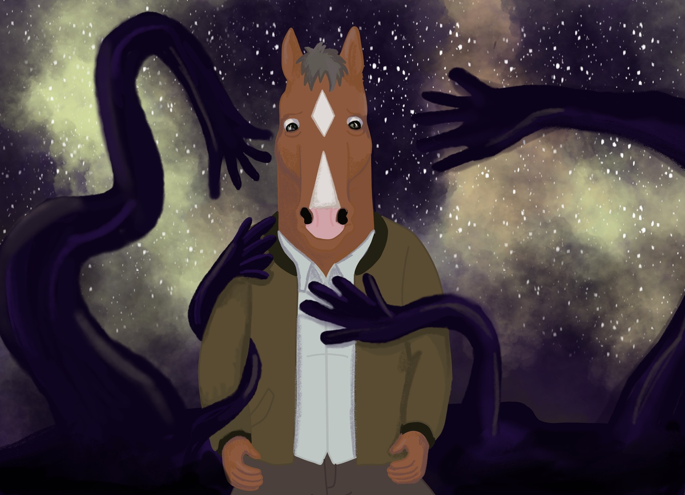
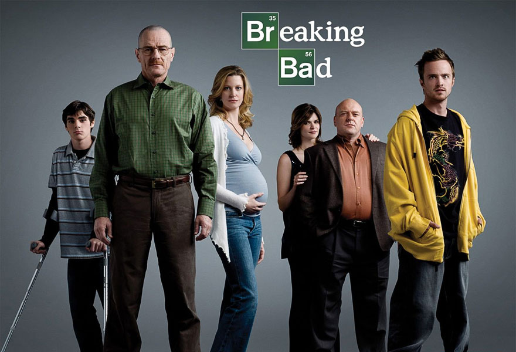
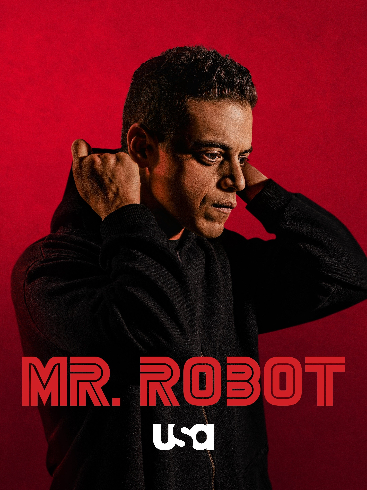

My Favorite TV shows
 The Walking Dead is an amazing TV series that I watched a lot throughout high school. The action was what drew me towards the show.
The Walking Dead is an amazing TV series that I watched a lot throughout high school. The action was what drew me towards the show.

Bojack Horseman is realer than it comes across. It follows the journey of a former TV star who is desperately trying to relive the good old days while balancing his demons.

I like the storytelling aspect of Breaking Bad. The show is well written and has a good flow.

As a techie and someone who loved psychological thrillers, Mr. Robot fulfills both of those itches for me. I loved the unreliable narrator angle of this show.